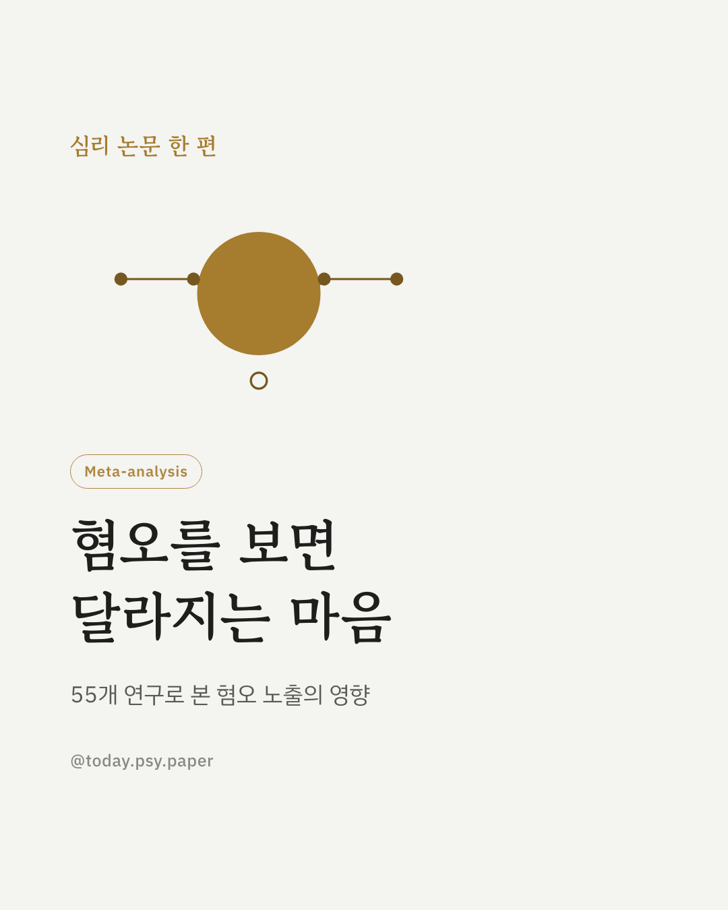
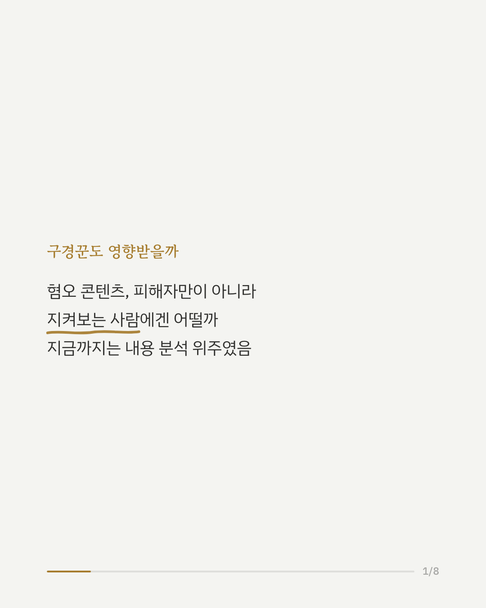
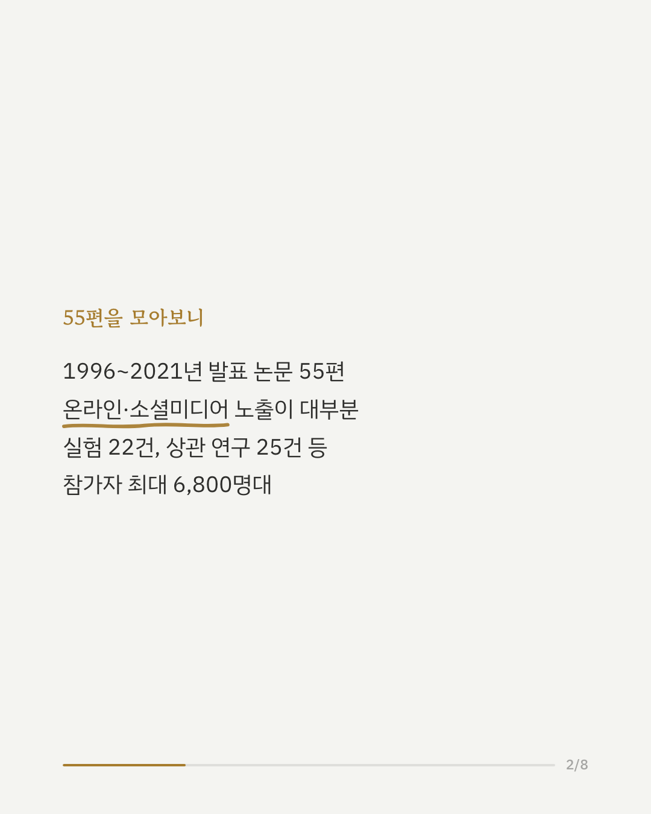
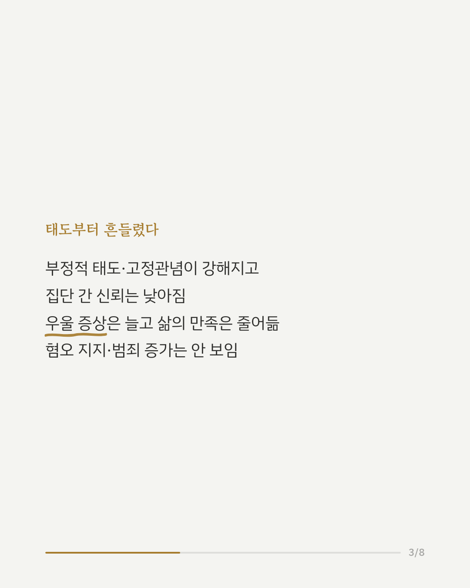
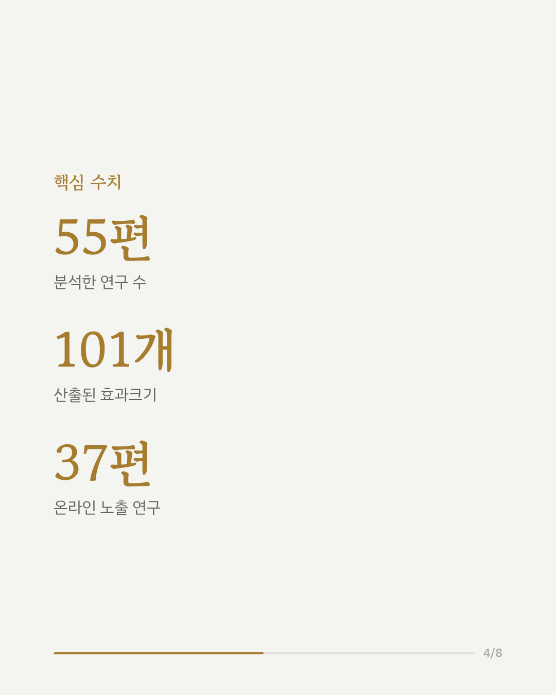
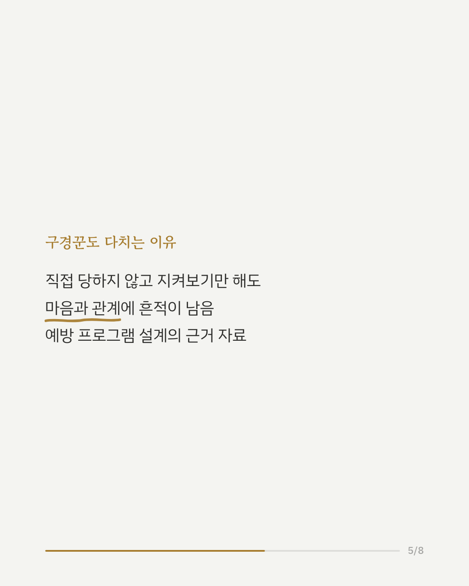
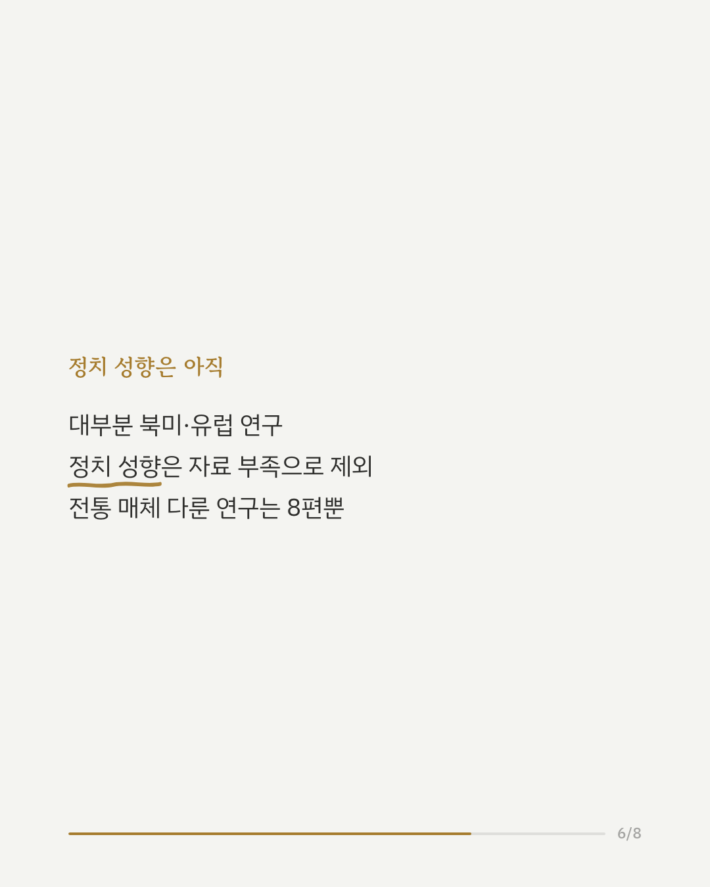
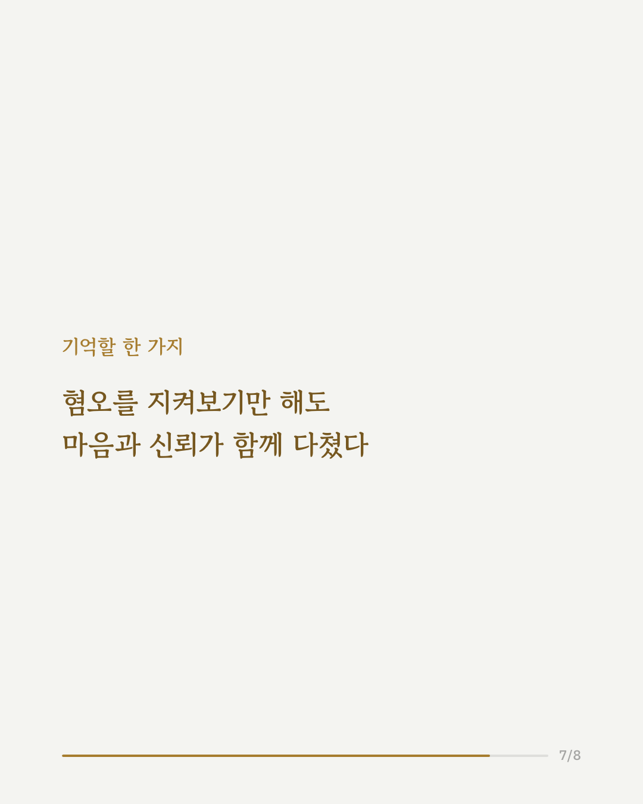
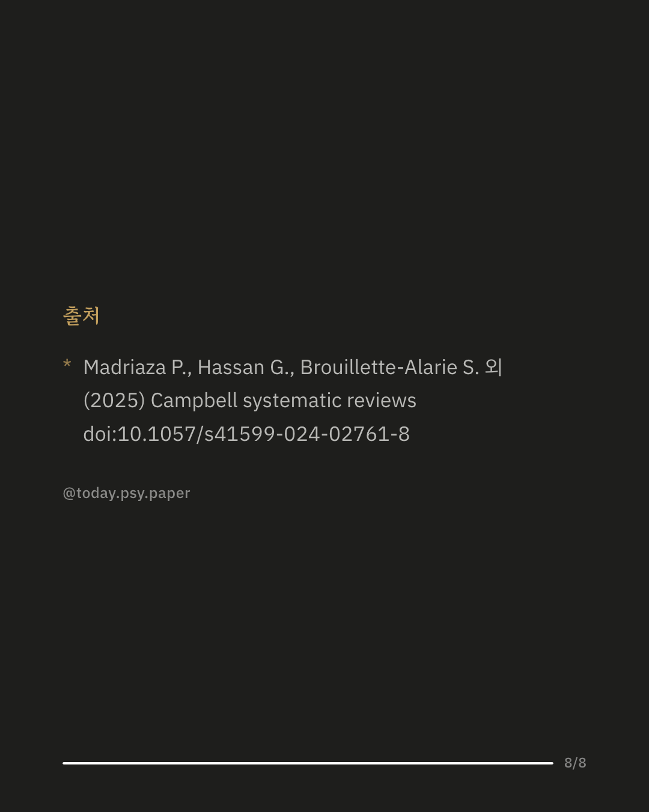

온라인 혐오 콘텐츠, 그냥 보기만 해도 우리에게 영향을 줄까요? 그동안 연구는 혐오 표현의 내용과 규모를 분석하는 데 집중되어 있었고, 이를 지켜보는 사람들에게 어떤 영향을 미치는지는 명확한 결론이 없었습니다. 이번 체계적 문헌고찰은 1996년부터 2021년까지 발표된 연구 55편, 101개의 효과크기를 모아 메타분석했습니다. 그 결과 혐오 콘텐츠에 노출되는 것만으로도 대상 집단에 대한 부정적 태도와 고정관념이 강해지고, 집단 간 신뢰는 낮아지는 경향이 나타났습니다. 심리적으로는 우울 증상이 늘고 삶의 만족도가 낮아졌는데, 특히 실험 연구에서 우울 증상 증가 효과가 컸습니다. 노출과 피해 경험 사이의 연관성도 뚜렷했고, 온라인 댓글에서는 혐오가 또 다른 혐오로 이어지는 흐름도 확인됐습니다. 다만 혐오 콘텐츠에 대한 지지나 실제 혐오 범죄 증가로는 이어지지 않았습니다. 포함된 연구 대부분이 북미와 유럽에서 이루어져, 다른 지역에도 그대로 적용하기는 조심스럽습니다. 정치 성향에 대한 영향은 관련 연구가 충분하지 않아 이번 메타분석에서 다루지 못했습니다. 출처: Campbell Systematic Reviews (2025), 'Exposure to hate in online and traditional media: A systematic review and meta-analysis of the impact of this exposure on individuals and communities' #온라인혐오 #혐오표현 #사회심리학 #메타분석 #심리학연구 #논문리뷰 #디지털웰빙
python3 publish.py 39822240